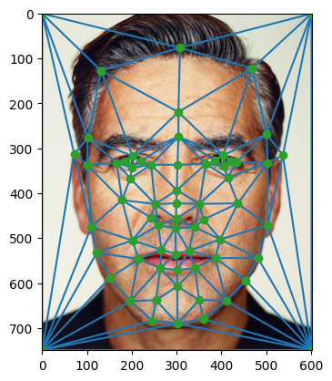
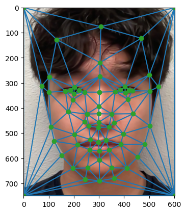
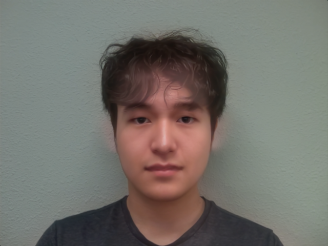
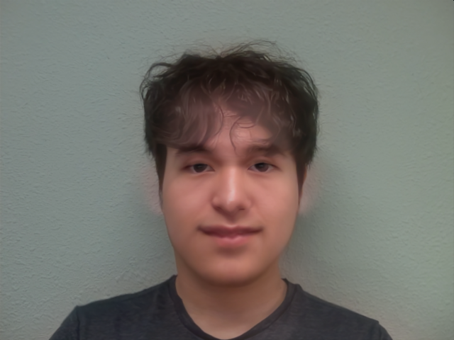
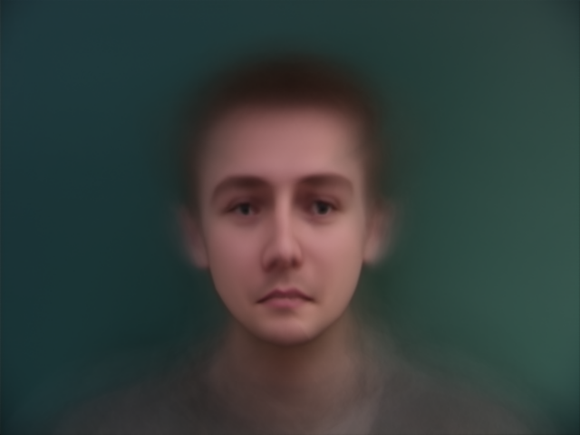

Face Morphing
Part 1. Defining Correspondences
In this part, I define the correspondences between two images to morph them together. The correspondences
are defined by selecting points on the two images that correspond to each other, using the
Correspondence Tool provided.
I defined 62 correspondences on each face, and I used the Delaunay triangulation algorithm to create a mesh of triangles
that connect the corresponding points. Then, I compute the midpoint triangulation by averaging the coordinates of the
corresponding points. The images below show the correspondences I used and the triangulation of the two faces.

Correspondences Points

George Triangulation Midpoint

Me Trangulation Midpoint
Part 2. Computing the Mid-way Face
In this part, I morph each images into the midpoint triangulation by computing the affine transformation
that maps the original triangulation to the midpoint triangulation. I compute the transformation matrix
\( \mathbf{A} \) by solving a linear system of equations for each triangle. Here, I find the transformation
from midpoint triangulation to the original triangulation to avoid holes in the morphed image. The process
below shows how I compute the transformation matrix \( \mathbf{A} \) for each triangle.
For each triangle, we have the equation:
\[
\mathbf{A} \mathbf{p}_i' = \mathbf{q}_i'
\]
Where \( \mathbf{p}_i' \) represents \( \mathbf{p}_i \) padded by a 1 at the bottom such that an affine transformation would make sense.
Breaking down the matrix \( \mathbf{A} \), we have the equation:
\[
\begin{bmatrix}
a & b & c \\
d & e & f \\
0 & 0 & 1
\end{bmatrix}
\begin{bmatrix}
p_{x_i} \\
p_{y_i} \\
1
\end{bmatrix}
=
\begin{bmatrix}
q_{x_i} \\
q_{y_i} \\
1
\end{bmatrix}
\]
This gives us the system of equations:
\[
a p_{x_i} + b p_{y_i} + c = q_{x_i}
\]
\[
d p_{x_i} + e p_{y_i} + f = q_{y_i}
\]
Expanding this for all 3 points, we have:
\[
a p_{x_1} + b p_{y_1} + c = q_{x_1}
\]
\[
d p_{x_1} + e p_{y_1} + f = q_{y_1}
\]
\[
a p_{x_2} + b p_{y_2} + c = q_{x_2}
\]
\[
d p_{x_2} + e p_{y_2} + f = q_{y_2}
\]
\[
a p_{x_3} + b p_{y_3} + c = q_{x_3}
\]
\[
d p_{x_3} + e p_{y_3} + f = q_{y_3}
\]
In matrix form, this system can be written as:
\[
\begin{bmatrix}
p_{x_1} & p_{y_1} & 1 & 0 & 0 & 0 \\
0 & 0 & 0 & p_{x_1} & p_{y_1} & 1 \\
p_{x_2} & p_{y_2} & 1 & 0 & 0 & 0 \\
0 & 0 & 0 & p_{x_2} & p_{y_2} & 1 \\
p_{x_3} & p_{y_3} & 1 & 0 & 0 & 0 \\
0 & 0 & 0 & p_{x_3} & p_{y_3} & 1
\end{bmatrix}
\begin{bmatrix}
a \\
b \\
c \\
d \\
e \\
f
\end{bmatrix}
=
\begin{bmatrix}
q_{x_1} \\
q_{y_1} \\
q_{x_2} \\
q_{y_2} \\
q_{x_3} \\
q_{y_3}
\end{bmatrix}
\]
Since this is a linear system, we can solve it to find \( a, b, c, d, e, f \) to construct the transformation matrix \( \mathbf{A} \).
Using this transformation matrix, I can compute the morphed image by applying the inverse transformation
to the midpoint triangulation. For each triangle, I first get all the points in the triangle, apply the
transformation matrix to each point, and then fill in the pixels in the bounding box of the triangle with
the transformed points. Here, I use scipy's RegularGridInterpolator to interpolate the pixel values in the
bounding box of the triangle. The images below show the morphed images of George and me.

George - Original
The left two photos have been morphed into the midpoint triangulation shown above, and each image is alpha-blended with the midpoint.
Part 3. The Morph Sequence
In this part, I wrote a function that generates a morph sequence of the two images. The function takes in
the two images, the corresponding points, triangulation, and the ratios for the morphing. Then, it computes
45 frames of the morph sequence by linearly interpolating the two images and the triangulation. The image
below (animated-PNG) show the morph sequence of George and me. A gif version is available
here (and in loop).
Part 4. The "Mean Face" of a Population
For this part, I used the Danes dataset to compute the "mean face" of the population. The dataset contains
240 images of 40 Danish people in different orientation and lighting, alongside with their correspondences.
I computed the mean face by taking the average of the points and the triangulation of the mean points,
and then I morphed each image into the triangulation. The left image below shows the mean face for all 240
images, and the right two images show the mean face for the front and side views.
Male and Female, Equally Weighted
Finally, I morph my own photo to the mean face of the Danes dataset, and vise versa. To that end, I had to
match the correspondences of my face to the Danes dataset. Morphing my face to the mean face of the Danes
dataset, I got the image on the left below. Morphing the average Danes face to my face, I got the image on the right.
Part 5. Caricatures: Extrapolating from the mean
For this part, I use the morph function to morph my image into different subsamples of Danes dataset.

Me and Average Danes Midpoint
Bells and Whistles

Smiling Me with Midpoint Appearance

Saddened Average Dane
The left image shows my photo's shape into the average Danes face with a smile.
The middle image shows my photo morphed into the average Danes face with a smile with 50% Dane appearance.
The right image shows the smiling Danes face morphed into my shape, which results in reverse effect of saddening the face.